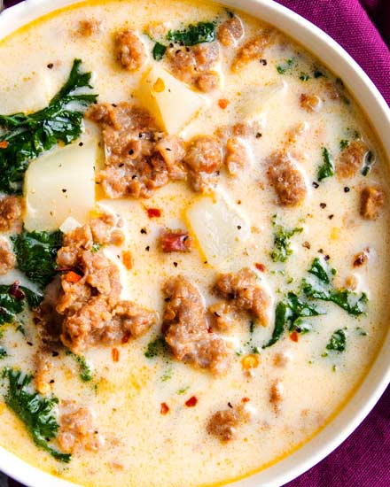

Restaurant-Style Zuppa Toscana

Description
Creamy sausage and potato soup. This recipe is very similar to the one served in a well known restaurant.
Ingredients
- 1 (16 ounce) package smoked sausage
- 2 potatoes, cut into 1/4-inch slices
- ¾ cup chopped onion
- 6 slices bacon
- 1 ½ teaspoons minced garlic
- 2 cups kale - washed, dried, and shredded
- 2 tablespoons chicken soup base
- 1 quart water
- ⅓ cup heavy whipping cream
Directions
- Preheat oven to 300 degrees F (150 degrees C).
- Place sausage links onto a sheet pan and bake for 25 minutes, or until done. Cut links in half lengthwise, then cut at an angle into 1/2-inch slices.
- Place onions and bacon slices in a large saucepan and cook over medium heat until onions are almost clear. Remove bacon and crumble. Set aside.
- Add garlic to the onions and cook an additional 1 minute. Add chicken soup base, water, and potatoes, simmer 15 minutes.
- Add crumbled bacon, sausage, kale, and cream. Simmer 4 minutes and serve.
Go Back